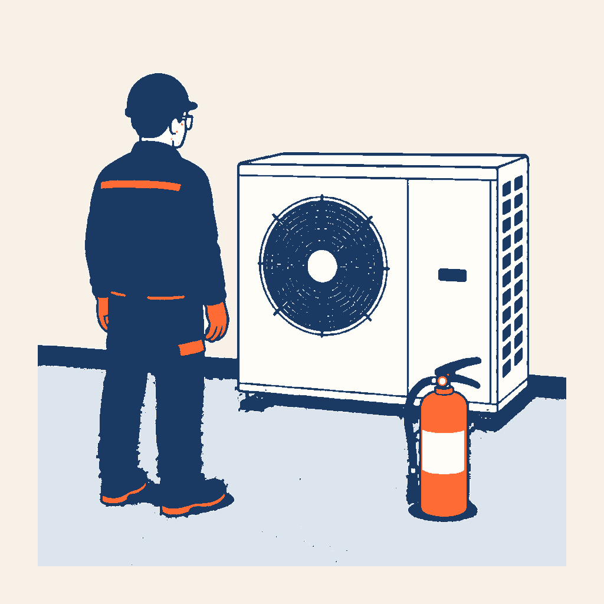

0,95×
HABILITATION FLUIDES A1/A2 · MISSION PROFESSIONNELLE
Mission 290
autoriser ou suspendre
Pourquoi utilise-t-on du propane ? Quels risques change-t-il ? Analysez une vraie situation, calculez une exigence documentée et préparez le poste adapté.
28 écrans · 1 cas continu · 5 décisions finales

R-290Préparer · vérifier · décider
Frontière pédagogique : cette mission prépare la zone et l’outillage. Le geste sur le circuit est enseigné ensuite dans g12b, en atelier encadré.